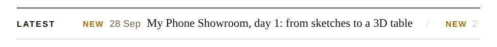
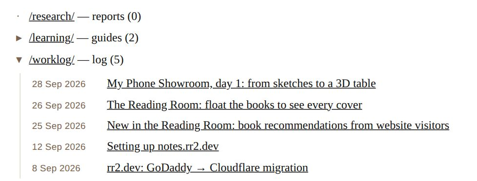
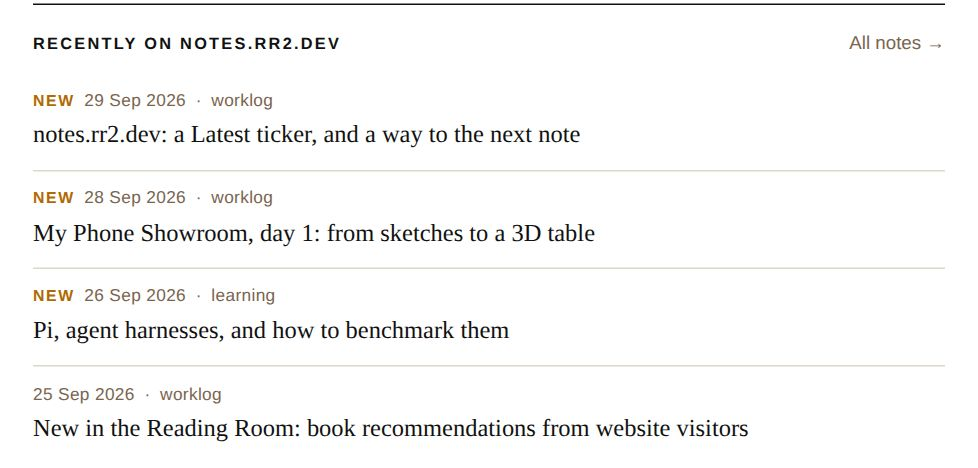

Rahul wanted visitors to see what is new and to move from one note to the next. Before this, the homepage showed three section links with a count, and every note simply ended.

The Latest strip on the homepage. It scrolls.

A section opened in place.
What changed
Latest ticker. A thin strip under the tagline scrolls the five newest notes from every section. It pauses on hover. For visitors who ask their device for less motion, it stays still and can be swiped.
Sections open in place. Each section on the homepage has an arrow that lists its notes underneath, newest first, dated like “28 Sep 2026”. The section link still goes to its full listing.
Recently on notes.rr2.dev. Every note now ends with the four newest notes on the site, never the one being read. The heading says “recently” on purpose, so the list is not mistaken for related reading.
New tag. Notes from the last three days get a small amber “New”. The visitor's browser works this out, so the tag does not go stale between posts.

The end of a note. The note being read is left out.
How it's built
Nothing new to deploy. The script that already rewrote the section listings now also writes the ticker, the section lists and the list at the end of each note. A GitHub Action runs it on every push. Each page is still one self-contained file.